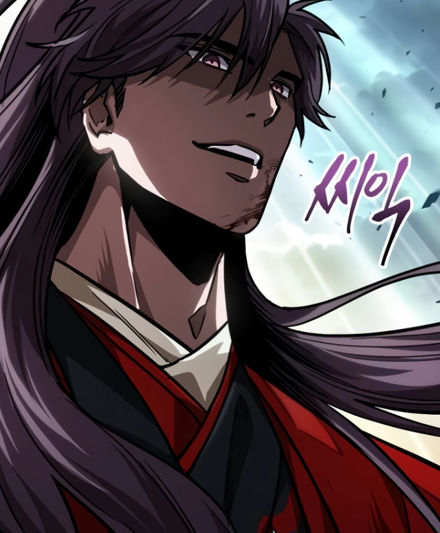
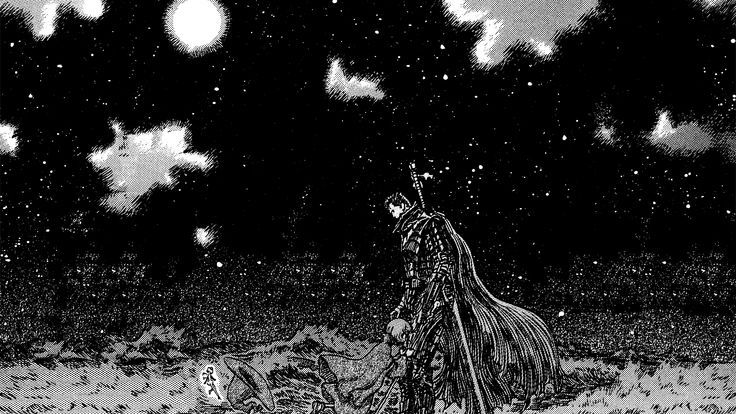
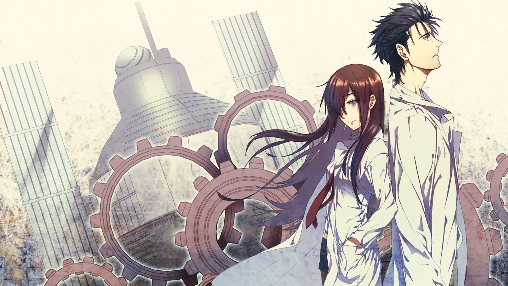

The Weeb Syndicate
Welcome my fellow Weebs
In a world obsessed with reality, they seek solace in the stylized realms of anime,
where every storyline is a path to enlightenment and every character a guide to
their ultimate truth.From the epic battles to the quiet moments of introspection,
the anime cult finds divine meaning in every animation cell,worshipping at the
altar of storytelling's finest creations.Our temples are living rooms lit by the glow
of screens, our prayers are fervent fan theories, and our hymns are the opening
themes of their beloved series. Welcome to my cult of anime, where every frame is a
piece of sacred art.
Unlock the Power of Anime - Join Our Journey!
Are you ready to go beyond just watching anime? In our community, we embrace
the deeper meanings behind every scene, every character, and every journey.
Whether you're new to anime or a lifelong fan, we welcome you to explore the
spiritual and philosophical depths hidden in these vibrant worlds.
Our Founders

TanKaizokuO - Soul King

ProNoobie - Captain

Addie - Captain
Membership Levels
1. Novice Watcher :
Access to general discussions and basic rituals.Participation in daily or
weekly anime viewing sessions.Entry to the community chat or forum.Receive a digital membership card.
2. Devoted Otaku :
Access to deeper philosophical discussions on anime's meaning and symbolism.
Participation in community events like cosplay ceremonies and themed discussions. Ability to lead or
suggest weekly watch party anime. Receive exclusive merch discounts. A physical or digital
badge showing their rank.
3. Sacred Cosplayer :
Priority access to secret or high-level rituals and events. Exclusive access to
advanced spiritual teachings from cult leaders. Personalized cosplay guidance for rituals and events.
Access to exclusive digital content, such as behind-the-scenes material or in-depth analyses of
cult-specific anime. Receive custom-designed, limited-edition cult merchandise.
4. Anime Sage :
Ability to mentor new members and lead weekly rituals or events. Special role in
ceremonies, such as leading meditations or chants. Access to secret lore and hidden knowledge
known only to higher-ranking members. Custom, hand-crafted relic or token representing their journey.
5. Grand Master of Anime :
Full access to all hidden knowledge, secret texts, and exclusive rituals.
Control over the cult's philosophical direction and decision-making. Leadership in major community
events, festivals, or sacred anime anniversaries. Receive custom, handcrafted ceremonial attire and
an artifact of leadership.
How to Join
Submit an Application :
Begin by filling out our Membership Application Form on the website.
Share your favorite anime series, characters, and what anime means to you spiritually. This will
help us understand your personal journey.
Choose Your Path :
Select your anime "mentor"—a character that inspires you. This will
guide your early journey within the cult.
Welcome Ceremony :
After your application is approved, you'll be invited to a virtual or
in-person Welcome Ceremony. This is where you'll be introduced to the core values and
beliefs of the cult. Expect a short introduction about our rituals, philosophy, and community rules.
Receive Your Symbol :
As part of your initiation, you'll receive a digital or physical symbol
representing your membership level, starting as a Novice Watcher.
Our Origin story
In a realm where reality and imagination intertwine, a visionary named Tanishq emerged
who saw deeper truths in the vibrant worlds of anime. This figure along with his fellow
weebs, Pranjal Gupta and Arpita Dash began to see these animated tales not just as
entertainment, but as spiritual allegories revealing the essence of existence.
It was during a particularly intense viewing of Steins;Gate—where the manipulation of
time revealed the fragility and interconnectedness of life—that the founder experienced
a profound revelation. They saw the characters' struggles and victories as symbolic of
humanity's quest for enlightenment and freedom. The lines between anime fiction and
spiritual truth blurred, leading to a groundbreaking insight: that the lessons within anime
could serve as a guiding light for understanding our own lives. Drawing upon themes of
freedom from One Piece, personal growth from Naruto, and existential questions from Neon
Genesis Evangelion, the founder began to form a belief system centered around these shared
narratives. They gathered like-minded individuals who saw the same divine reflections in anime,
creating a community united by a common vision.
Together, they established the cult, not merely as followers of anime, but as seekers of a
deeper truth, embracing the power of these stories to inspire, guide, and transform. The
cult's rituals and practices emerged from the anime's core messages: the pursuit of dreams,
the quest for freedom, and the power of friendship. Thus, the anime cult was born—a spiritual
path that celebrates the extraordinary within the ordinary, finding divine meaning in the world
of anime and using its lessons to navigate the complexities of life.
Our Scriptures

One Piece :
"One Piece" follows Monkey D. Luffy
and his crew of pirates as they search for the legendary
treasure, the One Piece, aiming to become the
Pirate King in a vibrant, adventurous world.

Shingeki No Kyogin :
"Shingeki No Kyogin" follows
Eren Yeager and his friends as they fight against giant
humanoid creatures known as Titans, uncovering dark
truths about their world and humanity's survival.

Psyco Pass :
"PsycoPass" or "Kanshikan Tsunemori
Akane" is set in a dystopian future where society's mental
states are monitored. Inspectors and Enforcers use this
data to maintain order, tackling crime and ethical
dilemmas in a surveillance-driven world.

Berserk :
"Berserk" follows Guts, a lone mercenary
with a tragic past, as he battles demonic forces and
struggles with fate, friendship, and revenge in a dark,
medieval fantasy world filled with brutality.

Steins Gate :
"Steins Gate" Set in Akihabara,
the story follows Rintarou Okabe, a self-proclaimed
"mad scientist," and his friends as they accidentally discover
a way to send messages to the past. This leads them into a
complex web of alternate timelines and butterfly effects,
forcing them to grapple with the ethical dilemmas of changing fate.
Our Core beliefs
1. Balance of Light and Dark (Yin-Yang)
Many anime series, like 'Naruto', 'Bleach', or 'Fullmetal Alchemist', emphasize the balance between opposing forces. You could form a core belief around harmony between positive and negative aspects of existence, like good and evil, creation and destruction, or life and death. This belief focuses on the idea that one cannot exist without the other, and true wisdom comes from understanding and balancing these forces.
2. Power of Friendship and Unity
A core theme in many anime, like 'Dragon Ball', 'One Piece', and 'My Hero Academia', is the power of friendship and unity. A belief system could focus on collective strength, emphasizing that individuals grow spiritually and emotionally through connections with others. This belief highlights how unity and teamwork allow people to overcome obstacles and achieve greatness together.
3. Endless Potential and Growth
Inspired by characters who continually push their limits, like in 'Naruto', 'Attack on Titan', and 'One Punch Man', your belief could center around the idea of self-improvement and growth. It would focus on unlocking one’s true potential through perseverance, hard work, and resilience, teaching that no limit is absolute.
4. Reincarnation and Cycles
In anime like 'Angel Beats!' and 'Sword Art Online', there are themes of reincarnation or characters moving through cycles of life and death. A core belief based on this could be the concept of rebirth and the journey of the soul through multiple lives or dimensions. Each life is a step toward enlightenment, with lessons learned across lifetimes contributing to spiritual evolution.
5. Fate vs. Free Will
Anime like 'Fate/Stay Night' and 'Steins;Gate' deal with the tension between fate and the power to change one’s destiny. A core belief could explore the idea of balancing destiny with the power of choice. While certain events may be fated, personal decisions and determination can alter outcomes, emphasizing the importance of agency and the responsibility that comes with free will.
6. Connection to Nature and the Universe
Drawing inspiration from anime like 'Princess Mononoke' or 'Nausicaä of the Valley of the Wind', a belief could revolve around living in harmony with nature and respecting the interconnectedness of all life. It emphasizes the sacredness of the environment, animals, and the universe itself, and promotes a lifestyle aligned with ecological balance and mindfulness.
7. Inner Strength and Spiritual Energy (Ki/Chakra)
Many anime series, such as 'Dragon Ball Z' or 'Naruto', focus on inner energy—Ki, Chakra, or some other form of spiritual power. Your belief system might teach that each person has untapped spiritual energy, and through meditation, discipline, and focus, one can access this energy to better themselves and the world around them.
8. Sacrifice for the Greater Good
Anime like 'Fullmetal Alchemist' and 'Attack on Titan' explore the theme of sacrifice for the sake of others or for a greater cause. A core belief could highlight selflessness, the willingness to sacrifice personal gain for the benefit of others, and the idea that true fulfillment comes from serving something larger than oneself.
9. Dreams and Ambitions
In anime, dreams and ambitions drive characters to overcome obstacles, explore new worlds, and grow personally. Every major character in One Piece has a dream they are determined to achieve. Luffy's dream is to become the Pirate King, and his crew each has their own personal goals. The series emphasizes the importance of having dreams and relentlessly pursuing them, no matter the obstacles.
10. Sub is the superior version
Sub is superior to dub for preserving original voice acting, nuanced emotions, and cultural context. It provides a more authentic experience of the anime's dialogue and intended impact. If you are the type of person who watches dub, we will help you convert to the superior version.
Would you like to dive deeper into any of these ideas, Click on the titles to to do a deep dive into our beliefs
Our Mission
The goal of our anime cult is to harness the transformative power of anime to inspire personal growth, foster a sense of community, and achieve spiritual enlightenment. We aim to:
Embrace and Explore: deeply into the philosophical and spiritual lessons embedded in anime, using these narratives to explore and understand the profound truths of existence.
Pursue Dreams: Encourage members to identify and relentlessly pursue their own dreams, much like the protagonists in their favorite series, fostering personal development and fulfillment.
Cultivate Freedom: Advocate for the pursuit of personal freedom and self-expression, drawing inspiration from anime's themes of breaking boundaries and challenging oppressive systems.
Foster Unity: Build a supportive and inclusive community where members can share their experiences, insights, and passions, drawing strength from each othe'’s journeys.
Celebrate Adventure: Embrace the spirit of adventure and discovery, continuously seeking new knowledge and experiences, both within the anime world and in our own lives.
Inspire and Transform: Use the powerful messages and characters from anime to inspire transformative change, both individually and collectively, aiming for spiritual growth and a deeper understanding of life's mysteries.
Daily & Weekly Rituals
Daily Rituals
Morning Reflection
Each morning, members start their day by reflecting on a meaningful anime quote. This could be a line that resonates with the core values of the cult, like friendship, perseverance, or freedom.
Example: Meditate on a quote from Naruto about overcoming obstacles, or a line from One Piece about following your dreams.
Character Emulation
Each day, members choose an anime character to emulate. They focus on adopting that character's traits—whether it's kindness, determination, or wisdom—throughout the day.
Example: If you pick Luffy from One Piece, you might approach the day with fearlessness and optimism.
Anime Episode Devotion
Watch one episode of a chosen anime series that reflects the cult's beliefs. This can be a solo experience or shared through virtual watch parties.
Example: Members could revisit significant episodes that explore themes like sacrifice, justice, or spiritual energy.
Cosplay Meditation
Engage in a brief cosplay meditation where members wear an item (like a headband, ring, or pendant) related to their favorite character. While wearing it, they reflect on the character's journey and how it applies to their own life.
Weekly Rituals
Anime Watch Party
Every week, members gather (virtually or physically) to watch and discuss episodes of an anime chosen by the community. The chosen anime should reflect core spiritual teachings or be part of the “canon” of the cult.
Afterward, discuss the spiritual or philosophical themes of the episode and how they relate to the cult's beliefs.
Sacred Cosplay Ceremony
Members dress as their favorite anime characters and gather to embody the traits they admire. This ritual can include speeches or role-playing where members discuss how the character's journey influences their own spiritual path.
This could also involve performing simple actions or tasks inspired by the character's role in their anime world.
Training Arc
This ritual mimics the "training arc" common in anime. Members set personal or spiritual challenges for the week, working on self-discipline or learning new skills. Each week, they discuss their progress, much like characters work to improve themselves in the story.This could be anything from physical fitness, learning something new, or working on a personal project.
Sacred Anime Art Creation
Set aside a day where members create anime-inspired art as a form of spiritual expression. This can include drawing characters, writing fan fiction, or composing music inspired by their favorite shows. Sharing this artwork with the community is part of the ritual, symbolizing creative energy and growth.
Merchandise
1. Apparel
T-Shirts and Hoodies:
iconic symbols, quotes, or artwork from your favorite anime, or even custom designs inspired by your cult's themes.
Costumes:
Outfits inspired by anime characters or created to reflect the cult's unique symbols and rituals.
Caps and Beanies:
With embroidered logos or symbols representing your cult's core beliefs.
2. Accessories
Jewelry:
Necklaces, rings, or bracelets featuring symbols or motifs from anime, or custom designs that represent your cult's spiritual elements.
Pins and Badges:
Collectible items with anime symbols or key characters that can be worn or displayed.
Keychains:
miniatures of beloved anime characters or cult-specific symbols.
3. Art and Home Décor
Posters and Prints:
High-quality artwork or scenes from significant anime episodes, or custom art reflecting your cult's philosophy.
Wall Scrolls:
inspirational quotes or symbols from anime that resonate with your cult's beliefs.
Figurines and Statues:
Collectible figures of key characters or original designs that embody your cult's values.
4. Ritual and Practice Items
Meditation Mats:
With anime-inspired designs or symbols, suitable for meditation sessions.
Journals and Notebooks:
anime artwork or themed covers for members to record their thoughts, goals, and spiritual reflections.
Candles and Incense:
With scents or designs inspired by anime worlds or characters, used during rituals or meditation.
Frequently Asked Questions
How can anime inspire a religion?
Ans. Anime can inspire a religion by offering rich philosophical ideas, moral lessons, and profound narratives that resonate deeply with people on both an emotional and spiritual level.Anime often presents grand, heroic narratives that resemble the myths and legends of ancient religions. Shows like Naruto, One Piece, and Attack on Titan have themes of good vs. evil, personal sacrifice, and the pursuit of higher ideals, much like the foundational stories in traditional religions. These anime tales can be seen as modern-day myths that inspire people to reflect on their lives, struggles, and place in the universe.
Do I need to watch certain anime to follow this religion?
Ans.No, you don't need to watch specific anime to follow this religion. After you become a full fledged member you have to read the our scriptures.
What are the core values?
Ans. Yin-Yang, Sacrifice for the Greater Good, Connection to Nature and the Universe, Fate vs. Free Will, Endless Potential and Growth, Power of Friendship and Unity
Would you like to dive deeper into any of these ideas, or combine elements to shape a more specific belief system?
Ans. Click on the titles to to do a deep dive into our beliefs
Q. Are there any anime characters considered sacred?
Ans.In our religion, every anime—whether mid-tier, legendary, or less acclaimed—is valued equally. Each holds significance and contributes to our spiritual journey, reflecting the diversity and depth of our beliefs.
How do I participate in rituals?
Ans.Watch Anime with Intention :
to watch anime episodes with a spiritual mindset, focusing on the deeper lessons they offer. This can be a personal ritual or something you do with the community.Consider journaling about how the characters' struggles, victories, or growth resonate with your spiritual journey.
Community Gatherings (Virtual or Physical) :
the community in group activities, such as anime watch parties, discussion forums, or virtual meet-ups where followers discuss spiritual themes from anime.These gatherings are an important ritual for connecting with others, much like how anime characters rely on the strength of their friends.
Create or Wear Symbols :
anime religions might have symbols or items (necklaces, bracelets, art) that represent the core beliefs of the religion. Wearing or displaying these symbols can be a personal ritual to keep your beliefs close throughout the day.